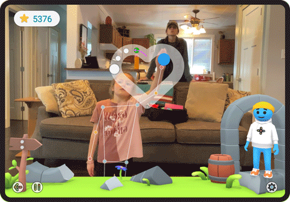
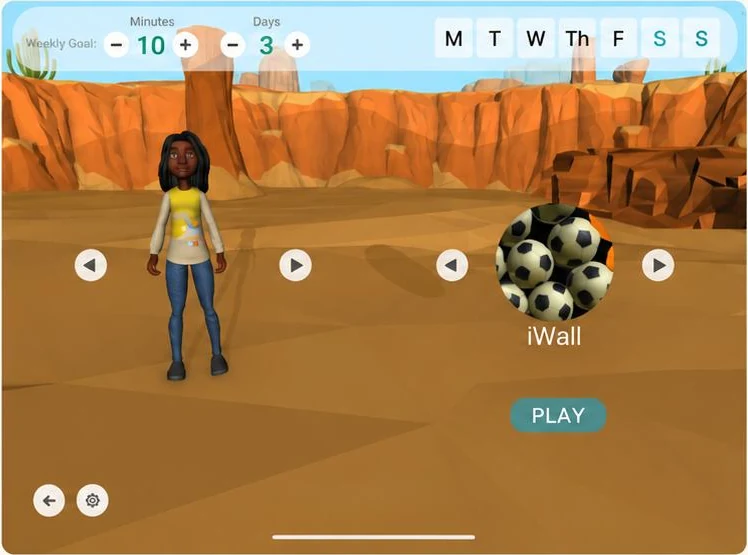
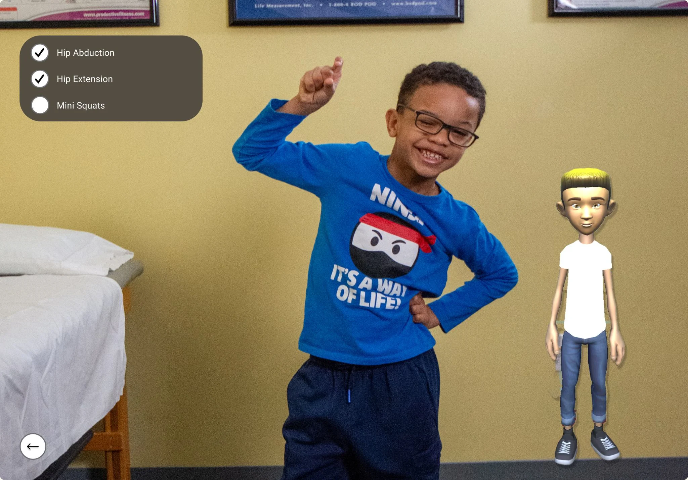
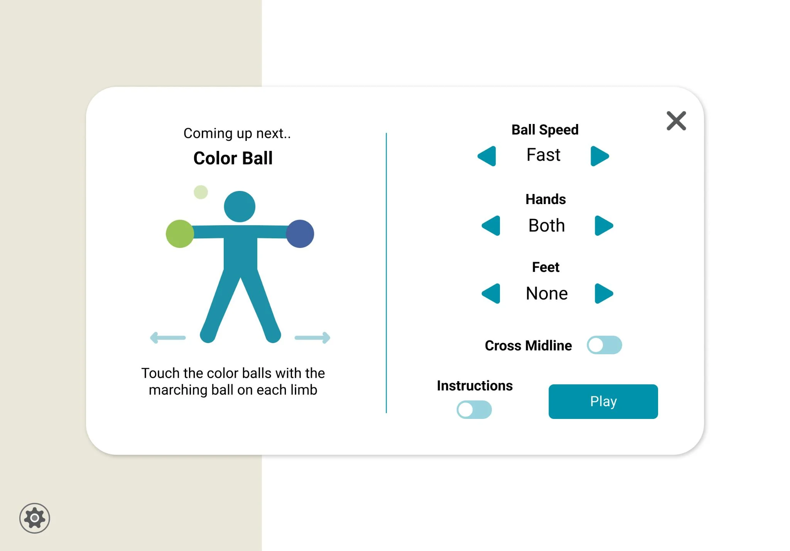
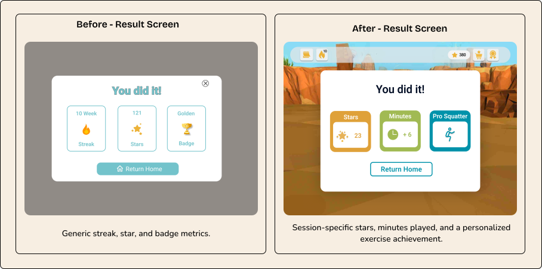
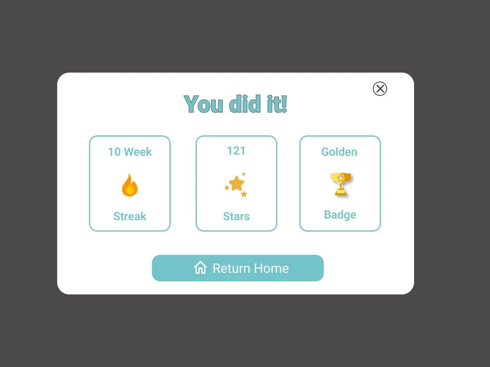
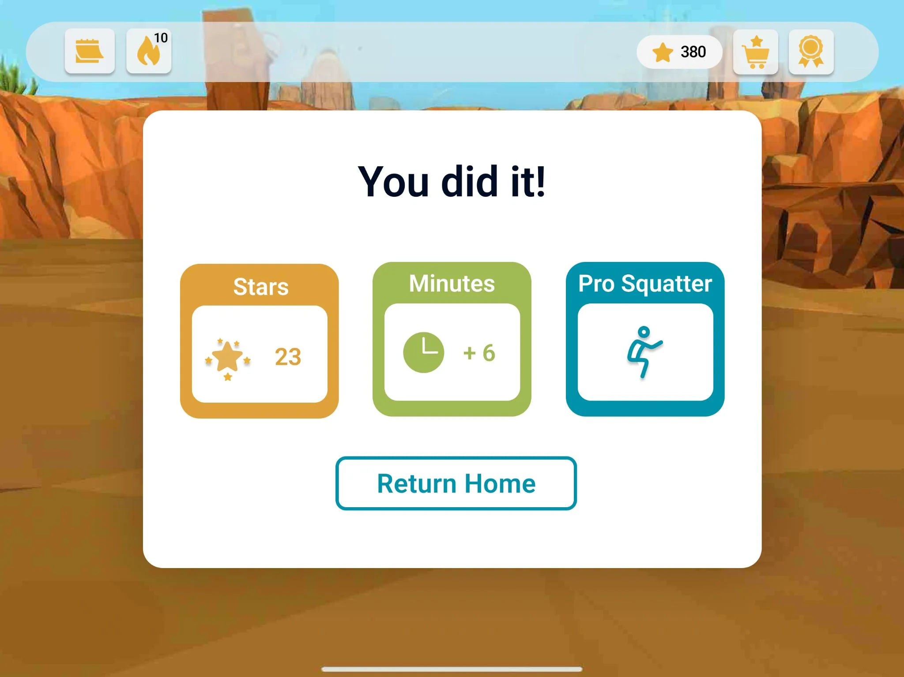
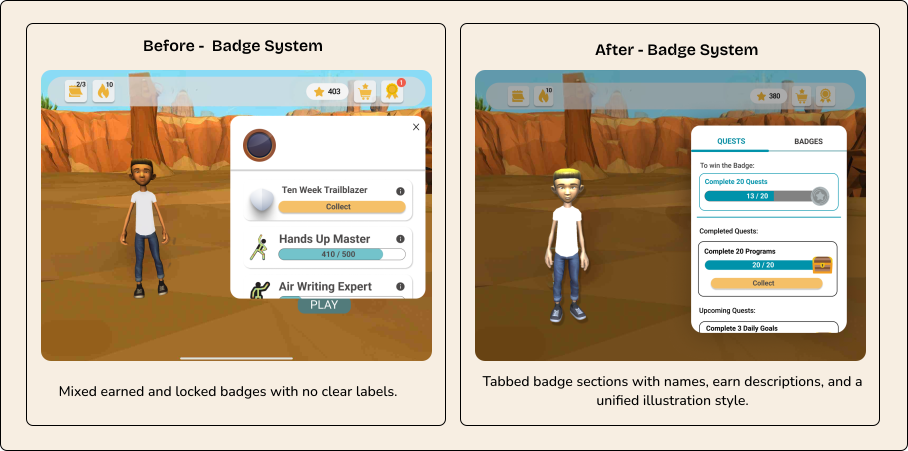
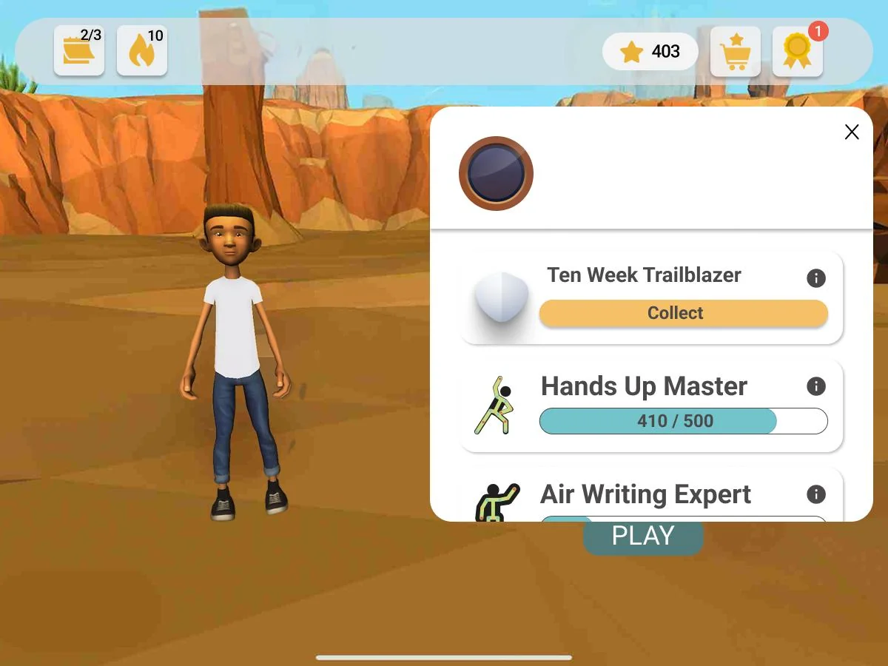
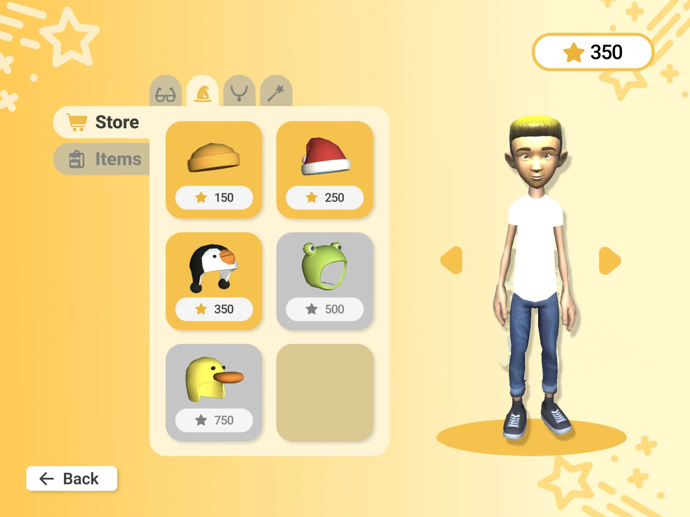

Product design · UX research · usability testing
ARWell: Transforming Goals Into Lasting Habits
A gamified AR physical-therapy app redesigned to make movement feel clearer, more rewarding, and worth returning to.

Project Snapshot
The challenge, research, and outcome of a connected rehabilitation redesign.
Motivation stalled before movement
Users loved the game, but they still felt uncertain about what came next, how rewards connected to effort, and whether their progress was real.
Research found friction across the whole flow
Surveys, interviews, and usability tests showed the problem was not one screen—it was how goal setting, transitions, rewards, and feedback stacked together.
Five core moments were redesigned
Goal Setting, the In-Between Screen, the Result Screen, the Badge System, and the Reward Store were rebuilt to feel like one coherent experience.
Outcomes became clearer and more motivating
Those connected changes raised task confidence, made progress easier to follow, and moved SUS from 71.5 to 88.2.
My Role
The product design ownership I held from research through validation.
Research Planning
Designed survey, interview, and usability-test protocols around motivation, guidance, and confidence.
Research Execution and Synthesis
Facilitated sessions, analyzed qualitative feedback, and turned findings into actionable product patterns.
End-to-End Product Design
Owned Goal Setting, In-Between Screen, Result Screen, Badge System, and Reward Store across structure, information architecture, and interaction design.
Prototyping and Validation
Built high-fidelity prototypes, tested moderated and unmoderated flows, and validated the redesign through SUS, efficiency, and satisfaction measures.
Context
The product already had the right idea—the experience needed to catch up.
ARWell is a gamified AR fitness app that turns full-body movement into play. Users complete squats, arm raises, and hip movements by interacting with an on-screen game world instead of following a traditional drill.
The foundation was playful, visual, and active. Early testing showed, however, that users could finish tasks without always understanding what came next, why rewards mattered, or how effort connected to progress.
How might we make ARWell easier to follow, more motivating, and more worth returning to?

Before movement
Goal Setting: set a plan that feels clear, fast, and personal.
Between activities
In-Between Screen: keep transitions obvious and the next move easy to prepare for.
After movement
Result Screen, Badge System, Reward Store: make progress meaningful, motivating, and worth returning to.
Research Process
Three methods, one goal: understand where motivation broke.
Each method answered a different question. Surveys exposed broad habit patterns, interviews revealed why momentum faded, and usability tests showed what users actually did inside ARWell.
Experience Surveys
n = 45 · Ages 18–64Mapped how people relate to wellness tools, motivation, and long-term exercise habits.
Semi-Structured Interviews
n = 5 · Ages 20–30Explored the gap between intention and behavior—why people lose momentum even when they want consistency.
Usability Tests
n = 41 · Ages 7–43Observed task pathways and confusion across moderated sessions and unmoderated Maze testing.
What We Kept Hearing
Three recurring patterns shaped the redesign.
Users did not simply need better-looking screens. They needed clearer motivation, more personal feedback, and stronger guidance before, during, and after gameplay.
Motivation
Without visible progress, meaningful rewards, or a reason to return, each session felt isolated.
“I would use ARWell more if there was a streak system—something that shows my progress.”— P9
Personalization
Generic feedback felt indifferent. Users responded when the app reflected their preferences and progress.
“It would be cool to give the frog a name, because it feels like your buddy.”— P4
Guidance
Uncertainty broke momentum when users did not know what was next or what their results meant.
“I want to know the purpose of what I’m doing—what makes me level up?”— P8
Design Iterations
Turning research patterns into five connected experience fixes.
Rather than treating each feature as a separate UI problem, we redesigned the moments before, between, and after gameplay as one motivational system.
Goal Setting
Make weekly commitments faster, clearer, and more flexible.
ProblemRepeated taps made a simple weekly commitment feel tedious.
Design moveIntroduced a scroll picker, circular day indicators, and an explicit confirmation state.



Why it matteredUsers could set goals faster and understand their weekly plan more easily.
In-Between Screen
Keep users oriented while moving between games.
ProblemSmall transition messages were easy to miss while users were physically active.
Design moveBuilt a full-screen transition card with the next game, exercise focus, controls, and countdown.



Why it matteredThe experience became easier to follow without interrupting the flow of movement.
Result Screen
Turn performance data into a meaningful accomplishment.
ProblemUsers saw metrics but did not understand what the numbers meant or why they mattered.
Design moveReframed results around session-based stars, minutes played, and a personalized exercise achievement.



Why it matteredPerformance feedback began to feel like accomplishment—not just data.
Badge System
Make progress and unlock criteria understandable.
ProblemBadges looked decorative, but earned, locked, and upcoming states were unclear.
Design moveCreated distinct states, badge names, descriptions, unlock criteria, and a unified illustration system.


Why it matteredAchievements became clearer, more meaningful, and more motivating to return for.
Reward Store
Make rewards feel earnable, visible, and trustworthy.
ProblemThe store had unclear item states, limited previews, and weak purchase feedback.
Design moveCreated a full-screen store with live avatar preview, categories, clear purchase states, and confirmation.


Why it matteredRewards felt connected to effort and easier to trust.
Results
The redesign made progress easier to understand—and easier to return to.
After the five core redesigns, ARWell tested as clearer, more motivating, and more rewarding. Users were noticing progress and asking how to keep going.
SUS Score
The experience moved from a Grade C to a Grade A usability score.
Satisfaction & Efficiency
Key flows became smoother while satisfaction increased.
Unmoderated SUS
Maze testing confirmed the redesign held up independently.
Return Motivation
Participants asked how to earn more badges and continued into additional sessions.
Inclusive Design
Designing for movement, attention, and different ability levels.
ARWell’s users were often moving, watching a larger screen, interpreting feedback quickly, and sometimes relying on caregivers or therapists. Accessibility had to work beyond a typical app interface.
The body is moving
Design made actions easy to start and understand while users were already in motion.
Attention is divided
Visual cues, icons, and clear hierarchy helped users notice the right information during active moments.
Support may be shared
Design considered caregivers, therapists, and shared attention so progress felt easier to support beyond the screen.
Reflection
What this project taught me about designing for return behavior.
ARWell taught me that a product can be functional and still fail to feel motivating. People could complete exercises and understand individual screens without feeling confident, rewarded, or excited to return.
- Motivation is built through many small moments. Each redesign solved a different problem, but together they changed how the experience felt.
- Observed behavior matters more than surface-level approval. Users sometimes called a screen “fine” while missing its key information seconds later.
Next Steps
What I would improve next.
The next phase would connect redesigned flows to live product data and test the experience more directly with ARWell’s primary users.